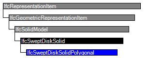

Natural language names
 | Festkörper - Entlang einer Polylinie extrudierte Kreisscheibe |
 | Swept Disk Solid Polygonal |
| Festkörper - Entlang einer Polylinie extrudierte Kreisscheibe |
| Swept Disk Solid Polygonal |
| Item | SPF | XML | Change | Description | IFC2x3 to IFC4 |
|---|---|---|---|---|
| IfcSweptDiskSolidPolygonal | ADDED |
The IfcSweptDiskSolidPolygonal is a IfcSweptDiskSolid where the Directrix is restricted to be provided by an IfcPolyline only. An optional FilletRadius attribute can be asserted, it is then applied as a fillet to all transitions between the segments of the IfcPolyline.
HISTORY New entity in IFC4.
Informal Propositions:
| # | Attribute | Type | Cardinality | Description | C |
|---|---|---|---|---|---|
| 6 | FilletRadius | IfcPositiveLengthMeasure | [0:1] | The fillet that is equally applied to all transitions between the segments of the IfcPolyline, providing the geometric representation for the Directrix. If omited, no fillet is applied to the segments. | X |
| Rule | Description |
|---|---|
| CorrectRadii | If a FilletRadius is given, it has to be greater or equal to the Radius of the disk. |
| DirectrixIsPolyline | The Directrix shall be of type IfcPolyline. |

| # | Attribute | Type | Cardinality | Description | C |
|---|---|---|---|---|---|
| IfcRepresentationItem | |||||
| LayerAssignment | IfcPresentationLayerAssignment @AssignedItems | S[0:1] | Assignment of the representation item to a single or multiple layer(s). The LayerAssignments can override a LayerAssignments of the IfcRepresentation it is used within the list of Items. | X | |
| StyledByItem | IfcStyledItem @Item | S[0:1] | Reference to the IfcStyledItem that provides presentation information to the representation, e.g. a curve style, including colour and thickness to a geometric curve. | X | |
| IfcGeometricRepresentationItem | |||||
| IfcSolidModel | |||||
| Dim :=3 | IfcDimensionCount | [1:1] | The space dimensionality of this class, it is always 3. | X | |
| IfcSweptDiskSolid | |||||
| 1 | Directrix | IfcCurve | [1:1] | The curve used to define the sweeping operation. The solid is generated by sweeping a circular disk along the Directrix. | X |
| 2 | Radius | IfcPositiveLengthMeasure | [1:1] | The Radius of the circular disk to be swept along the directrix. Denotes the outer radius, if an InnerRadius is applied. | X |
| 3 | InnerRadius | IfcPositiveLengthMeasure | [0:1] | This attribute is optional, if present it defines the radius of a circular hole in the centre of the disk. | X |
| 4 | StartParam | IfcParameterValue | [0:1] | The parameter value on the Directrix at which the sweeping operation commences. If no value is provided the start of the sweeping operation is at the start of the Directrix.. | X |
| 5 | EndParam | IfcParameterValue | [0:1] | The parameter value on the Directrix at which the sweeping operation ends. If no value is provided the end of the sweeping operation is at the end of the Directrix.. | X |
| IfcSweptDiskSolidPolygonal | |||||
| 6 | FilletRadius | IfcPositiveLengthMeasure | [0:1] | The fillet that is equally applied to all transitions between the segments of the IfcPolyline, providing the geometric representation for the Directrix. If omited, no fillet is applied to the segments. | X |
<xs:element name="IfcSweptDiskSolidPolygonal" type="ifc:IfcSweptDiskSolidPolygonal" substitutionGroup="ifc:IfcSweptDiskSolid" nillable="true"/>
<xs:complexType name="IfcSweptDiskSolidPolygonal">
<xs:complexContent>
<xs:extension base="ifc:IfcSweptDiskSolid">
<xs:attribute name="FilletRadius" type="ifc:IfcPositiveLengthMeasure" use="optional"/>
</xs:extension>
</xs:complexContent>
</xs:complexType>
ENTITY IfcSweptDiskSolidPolygonal
SUBTYPE OF (IfcSweptDiskSolid);
FilletRadius : OPTIONAL IfcPositiveLengthMeasure;
WHERE
CorrectRadii : NOT(EXISTS(FilletRadius)) OR (FilletRadius >= SELF\IfcSweptDiskSolid.Radius);
DirectrixIsPolyline : 'IFCGEOMETRYRESOURCE.IFCPOLYLINE' IN TYPEOF(SELF\IfcSweptDiskSolid.Directrix);
END_ENTITY;
 EXPRESS-G diagram
EXPRESS-G diagram Link to this page
Link to this page